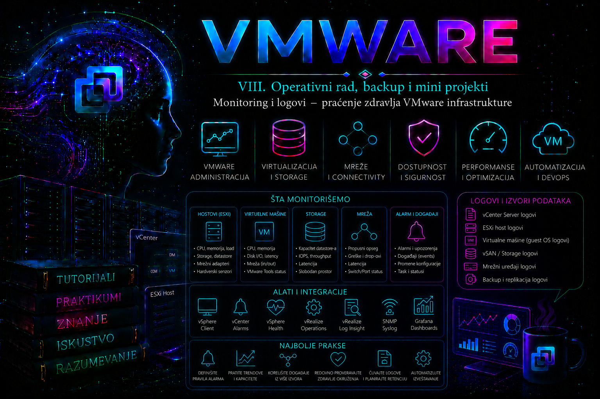

VMware

Monitoring VMware infrastrukture nije posmatranje nekoliko grafikona niti reagovanje tek kada korisnici prijave zastoj. To je organizovan proces prikupljanja, čuvanja, povezivanja i tumačenja podataka o stanju ESXi hostova, vCenter Servera, virtuelnih mašina, mreže, storage sistema i upravljačkih servisa. Njegov cilj nije samo da potvrdi da komponenta trenutno radi, već da dovoljno rano otkrije degradaciju, rast rizika ili odstupanje od očekivanog ponašanja.
Administrator mora razlikovati dostupnost od zdravlja sistema. ESXi host može odgovarati na mreži, a istovremeno imati zasićen storage red, nestabilan fizički adapter, nedostupan syslog server ili popunjen ramdisk. Virtuelna mašina može biti uključena, ali njena aplikacija može kasniti zbog CPU Ready vremena, swapping-a ili storage latencije. vCenter može prikazivati inventar, dok jedan od njegovih servisa radi nestabilno ili se baza približava kapacitetnom ograničenju. Zbog toga se stanje infrastrukture procenjuje kombinovanjem metrika, događaja, alarma, logova i operativnog konteksta.
Uloga monitoringa u radu administratora
Dobro projektovan monitoring treba da odgovori na četiri grupe pitanja:
- da li su ključne komponente dostupne i međusobno povezane;
- da li rade unutar očekivanih performansnih i kapacitetnih granica;
- da li se pojavljuju greške, upozorenja ili promene koje povećavaju rizik;
- da li postoji dovoljno istorijskih podataka da se incident naknadno rekonstruiše.
Monitoring nije zamena za arhitektonsko razumevanje. Alarm koji prijavljuje visoku iskorišćenost CPU-a ne dokazuje da postoji CPU problem. Visoka iskorišćenost može biti normalna i poželjna ako nema CPU Ready vremena, host nije prezasićen, aplikacija ostvaruje očekivane performanse i opterećenje je planirano. Nasuprot tome, relativno niska prosečna iskorišćenost može prikriti kratke, ali učestale vršne periode, NUMA problem ili čekanje pojedinačnih vCPU niti.
Zadatak administratora zato nije da ukloni crvenu boju iz konzole, već da utvrdi šta je signal, šta posledica i šta je zaista osnovni uzrok.
Slojevi podataka za praćenje VMware infrastrukture
vSphere okruženje proizvodi više različitih vrsta operativnih podataka. Oni se međusobno dopunjuju, ali nisu međusobno zamenljivi.
| Vrsta podatka | Šta predstavlja | Tipična upotreba | Ograničenje |
|---|---|---|---|
| Metrika | Numeričko stanje resursa tokom vremena | CPU, memorija, latencija, throughput, packet drops, kapacitet | Bez konteksta ne objašnjava uzrok |
| Događaj | Zapis da se određena radnja ili promena dogodila | Power operacija, login, migracija, rekonfiguracija, gubitak veze | Ne mora označavati problem |
| Alarm | Procena uslova na osnovu definisanog okidača | Rano upozorenje i operativna eskalacija | Može biti loše podešen ili previše bučan |
| Log | Detaljan zapis rada određene komponente | Dijagnostika, korelacija, potvrda uzroka | Veliki obim, različit format i ograničeno lokalno čuvanje |
| Health status | Sažeta procena ugrađenog health mehanizma | Brza identifikacija oblasti koja zahteva proveru | Ne zamenjuje analizu osnovnih podataka |
vSphere Monitoring and Performance dokumentacija razdvaja performance charts, alarms, events i health funkcije upravo zato što svaki od ovih mehanizama predstavlja drugačiji pogled na stanje sistema.
Arhitektura monitoringa u vSphere okruženju
U centralno upravljanom okruženju vCenter Server predstavlja osnovnu tačku za objedinjavanje inventara, događaja, alarma i istorijskih statistika. ESXi hostovi i upravljački agenti šalju podatke vCenter-u, dok vCenter servisi obrađuju, čuvaju i prikazuju te podatke kroz vSphere Client i API interfejse.
To ipak ne znači da je vCenter jedini izvor istine. Kada je host disconnected, kada je vCenter nedostupan ili kada postoji problem u upravljačkom kanalu, administrator mora moći da proveri ESXi direktno. Lokalni ESXi logovi, ESXCLI, esxtop i Host Client mogu ostati dostupni čak i kada centralni prikaz nije pouzdan.
Praktična monitoring arhitektura zato obično sadrži najmanje sledeće slojeve:
- lokalno prikupljanje metrika i logova na ESXi hostu;
- centralni vCenter pregled događaja, alarma i performansi;
- udaljeno čuvanje logova na syslog platformi;
- spoljno praćenje dostupnosti vCenter-a, ESXi management interfejsa i kritičnih servisa;
- po potrebi integraciju sa SIEM, ITSM ili naprednom operations platformom.
Centralizacija je posebno važna zato što se lokalni ESXi logovi mogu nalaziti na scratch lokaciji ili ramdisku, zavisno od instalacije i konfiguracije. Broadcom dokumentacija navodi da ESXi koristi servis vmsyslogd, da se logovi mogu čuvati lokalno i da se radi očuvanja i centralne analize mogu prosleđivati udaljenom syslog serveru.
Objekti koje administrator mora da prati
Monitoring se projektuje prema zavisnostima servisa, a ne prema tome koji objekti su najvidljiviji u vSphere Client-u.
vCenter Server zahteva praćenje dostupnosti appliance-a, stanja servisa, zauzeća njegovih particija, kapaciteta baze, vremena, DNS rezolucije, sertifikata, autentikacionih servisa i veze sa ESXi hostovima. Ako vCenter nije dostupan, postojeće virtuelne mašine uglavnom nastavljaju da rade na hostovima, ali centralno upravljanje, DRS, administrativni vMotion postupci, alarmi i niz drugih funkcija mogu biti ograničeni.
ESXi host zahteva praćenje upravljačke povezanosti, hardverskih senzora, CPU i memorijskog pritiska, storage putanja, datastora, mrežnih adaptera, VMkernel interfejsa, sistemskih servisa, scratch i log kapaciteta i stanja klaster funkcija kao što su HA i vSAN, kada su prisutne.
Virtuelna mašina zahteva praćenje power stanja, VMware Tools statusa, CPU Ready i Co-stop pokazatelja, memorijskog ballooning-a i swapping-a, disk latencije, mrežnih grešaka, snapshot stanja i aplikacione dostupnosti. VMware Tools heartbeat može pomoći u proceni stanja gosta, ali nije isto što i provera aplikacije. Operativni sistem može odgovarati dok poslovni servis ne radi.
Mreža zahteva praćenje link stanja, redundanse uplinkova, grešaka fizičkih portova, packet drops događaja, VLAN i MTU doslednosti, VMkernel dostupnosti i kapaciteta. Prosečan bandwidth nije dovoljan pokazatelj. Kratkotrajni burst, queue drop ili asimetrična greška mogu izazvati ozbiljan incident bez visoke prosečne iskorišćenosti.
Storage zahteva praćenje dostupnosti putanja, stanja multipathing-a, APD i PDL događaja, latencije na hostu i uređaju, queue stanja, prostora na datastore-u i ponašanja storage sistema izvan VMware sloja. vSphere može pokazati da zahtev dugo čeka, ali za potvrdu uzroka često je potrebna korelacija sa SAN, NAS ili array monitoringom.
Performance Charts i istorijske metrike
vSphere Client pruža pregled performansi za inventarske objekte, uključujući CPU, memoriju, mrežu i storage. Performance charts mogu biti pregledni ili napredni, zavisno od izabranog objekta, vremenskog perioda i verzije platforme.
Administrator pri analizi mora da proveri:
- koji objekat se meri;
- koja je jedinica mere;
- da li je vrednost prosečna, maksimalna, zbirna ili trenutna;
- koji interval uzorkovanja se koristi;
- da li je podatak real-time ili istorijski agregiran;
- da li su metrika i vremenski interval odgovarajući za prijavljeni simptom.
Istorijski podaci se agregiraju da bi se smanjili kapacitet i trošak čuvanja. Posledica je gubitak detalja. Kratak problem od nekoliko minuta može biti jasno vidljiv u real-time intervalu, ali gotovo nevidljiv u dugoročnom dnevnom proseku. Zbog toga incident treba analizirati u najužem periodu koji obuhvata početak simptoma, događaj i oporavak.
Performance monitoring mora biti zasnovan na baznom stanju. Prag od 70% ili 80% nema univerzalnu vrednost. Administrator treba da zna kako se određeni klaster, host ili aplikacija ponašaju tokom normalnog radnog dana, batch perioda, backup prozora, patching-a i vršnog poslovnog opterećenja.
Događaji, zadaci i alarmi
Event predstavlja zapis o promeni ili aktivnosti. Može nastati zbog administratorske radnje, automatizacije, promene stanja ili detektovanog problema. Task predstavlja izvršavanje operacije koja ima početak, tok i rezultat. Alarm procenjuje stanje na osnovu određenog događaja, metrike ili uslova.
Ova razlika je ključna u incident analizi. Na primer:
- događaj može pokazati da je VM rekonfigurisana;
- task može pokazati ko je pokrenuo operaciju i da li je uspešno završena;
- alarm može pokazati da je nakon te promene dostignut kritičan prag;
- log može objasniti tehnički razlog problema.
vSphere poseduje unapred definisane alarme, ali enterprise okruženje obično zahteva i prilagođene alarmne definicije. Alarm treba da ima jasan objekat, okidač, warning i critical uslov, trajanje uslova, način resetovanja, vlasnika reakcije i dokumentovan postupak.
Loše projektovan alarm proizvodi dve vrste rizika. Preosetljiv alarm generiše veliki broj obaveštenja i dovodi do alarm fatigue pojave. Preširok ili previše tolerantan alarm prijavljuje problem tek nakon što je usluga već pogođena.
Prag treba da sadrži vremensku komponentu kada je to moguće. Jednokratni CPU skok od nekoliko sekundi često nije incident. CPU Ready, storage latencija ili gubitak storage putanje koji traju dovoljno dugo da utiču na uslugu jesu znatno važniji.
PowerCLI omogućava pregled alarmnih definicija pomoću cmdleta Get-AlarmDefinition. Komanda se izvršava na administrativnoj stanici sa instaliranim aktuelnim VCF PowerCLI modulima, nakon povezivanja na vCenter Server. Ona samo čita konfiguraciju i bezbedna je za produkcionu proveru.
Connect-VIServer -Server vcsa01.lab.local
Get-AlarmDefinition |
Sort-Object Name |
Select-Object Name, Enabled, EntityRezultat treba pregledati zajedno sa stvarnim aktiviranim alarmima. Postojanje definicije ne znači da je alarm pravilno vezan, omogućen ili operativno koristan.
PowerCLI za događaje i performanse
PowerCLI je posebno koristan za ponovljive upite, poređenje većeg broja objekata i izvoz podataka. Aktuelni Broadcom Developer Portal ga objavljuje kao VCF PowerCLI, dok se brojni postojeći cmdleti i moduli i dalje koriste za vSphere administraciju.
Za pregled novijih događaja može se koristiti Get-VIEvent. Sledeća komanda se izvršava na administrativnoj stanici pod nalogom koji ima pravo čitanja događaja. Ne menja stanje sistema.
$start = (Get-Date).AddHours(-4)
Get-VIEvent -Start $start -MaxSamples 5000 |
Sort-Object CreatedTime |
Select-Object CreatedTime, UserName, FullFormattedMessageParametar -Start ograničava vremenski period, dok -MaxSamples sprečava da podrazumevano ograničenje vrati premalo rezultata. U velikom okruženju upit treba dodatno ograničiti objektom ili vremenskim prozorom. Ne treba automatski zahtevati sve događaje za više meseci, jer takav upit može biti spor i administrativno skup.
Za istorijske metrike koristi se Get-Stat. Primer proverava CPU Ready vrednosti određene virtuelne mašine tokom poslednjih trideset minuta:
$vm = Get-VM -Name "app01"
$start = (Get-Date).AddMinutes(-30)
Get-Stat -Entity $vm `
-Stat "cpu.ready.summation" `
-Start $start |
Sort-Object Timestamp |
Select-Object Timestamp, Value, UnitKomanda samo čita statistiku. Ipak, rezultat nije dovoljno samo prikazati. summation metrika predstavlja zbir vremena u intervalu uzorkovanja, pa se mora tumačiti u odnosu na dužinu intervala i broj vCPU jedinica. Poređenje sirovih vrednosti iz različitih intervala može dati pogrešan zaključak.
ESXi lokalni monitoring
Kada je potreban neposredan uvid u trenutno stanje hosta, koriste se esxtop, ESXCLI, lokalni logovi i Host Client.
esxtop se pokreće u ESXi Shell ili SSH sesiji sa privilegovanim nalogom. Komanda ne menja konfiguraciju, ali stalna SSH dostupnost povećava bezbednosnu površinu, pa servis treba uključivati kontrolisano i isključiti nakon rada.
esxtopInteraktivni prikaz omogućava prelazak između CPU, memorijskog, mrežnog, storage i drugih pogleda. esxtop prikazuje detaljne real-time podatke koje vCenter grafikoni mogu agregirati ili prikazivati drugačijom granularnošću. Administrator treba da zabeleži vreme posmatranja, pogođeni objekat i relevantne kolone, jer snimak bez vremenskog konteksta ima ograničenu forenzičku vrednost.
Za automatizovano prikupljanje može se koristiti batch režim:
esxtop -b -d 5 -n 120 > /tmp/esxtop.csvOva komanda uzima uzorak na svakih pet sekundi, ukupno 120 puta. Ne menja konfiguraciju, ali generiše izlazni fajl. Pre pokretanja treba proveriti slobodan prostor i izabrati trajnu ili privremenu lokaciju u skladu sa namenom. Nije dobra praksa ostaviti neograničeno prikupljanje na ramdisku.
ESXi logovi i njihova uloga
U aktuelnim ESXi izdanjima logovi su grupisani prema komponentama i dostupni su kroz lokacije kao što je /var/run/log, uz kompatibilne putanje koje se često prikazuju kroz /var/log. Broadcom KB za lokacije ESXi logova predstavlja referentni izvor za tačne fajlove određene verzije.
| Log | Komponenta | Za šta se koristi |
|---|---|---|
vmkernel.log |
VMkernel | Storage putanje, uređaji, mrežni drajveri, CPU, memorija i kernel događaji |
vmkwarning.log |
VMkernel warnings | Sažeti pregled upozorenja koja zahtevaju dodatnu proveru |
hostd.log |
Host management servis | Lokalne operacije nad hostom i VM objektima, API zahtevi i greške upravljanja |
vpxa.log |
vCenter agent na hostu | Komunikacija i zadaci između ESXi hosta i vCenter Servera |
vobd.log |
VMkernel Observation servis | VOB događaji, alarmni obrasci, syslog i sistemska upozorenja |
auth.log |
Autentikacija | Prijave, SSH sesije i bezbednosno relevantni pristupi |
fdm.log |
vSphere HA agent | HA stanje, izbor mastera, heartbeat i HA akcije |
vmware.log |
VMX proces određene VM | Power operacije, virtuelni uređaji, VMX greške i ponašanje konkretne VM |
Log se ne bira prema tome koji naziv deluje poznato, već prema toku procesa. Ako vCenter ne može da izvrši operaciju nad VM-om, administrator može povezati vpxd.log na vCenter-u, vpxa.log i hostd.log na hostu i vmware.log konkretne virtuelne mašine.
Za čitanje poslednjih poruka koristi se:
tail -n 100 /var/run/log/vmkernel.logZa praćenje novih zapisa tokom reprodukcije problema:
tail -f /var/run/log/hostd.logKomande ne menjaju stanje sistema i uobičajeno su bezbedne. Međutim, tail -f treba zaustaviti sa Ctrl+C nakon posmatranja. Administrator mora prvo zabeležiti tačno vreme događaja i proveriti vremensku zonu i sinhronizaciju vremena, jer logovi često koriste UTC oznake.
Za filtriranje se može koristiti grep:
grep -Ei "error|failed|timeout|APD|PDL" /var/run/log/vmkernel.logOvakav filter služi samo kao početna selekcija. Reč error može biti deo bezazlenog konteksta, dok značajan problem ne mora sadržati nijednu od navedenih reči. Nalaz se zato proverava čitanjem okolnih redova i korelacijom sa događajima i metrikama.
Od ESXi 8.0 uvedene su promene u formatiranju pojedinih logova, uključujući jasnije oznake severity nivoa, komponente i identifikatora procesa. Parseri i SIEM pravila napravljena za stariji format moraju se proveriti nakon nadogradnje.
Logovi virtuelne mašine
Log konkretne virtuelne mašine nalazi se u njenom direktorijumu na datastore-u, zajedno sa VM konfiguracionim fajlovima. Broadcom navodi da se lokacija može pronaći pomoću:
vim-cmd vmsvc/getallvmsKomanda se izvršava na ESXi hostu sa privilegovanim nalogom i samo čita inventar registrovanih VM-ova. Dobijena putanja do .vmx fajla pokazuje direktorijum u kojem se nalazi vmware.log.
vmware.log je relevantan kada problem zahvata samo jednu virtuelnu mašinu: neuspešan power-on, virtuelni uređaj, snapshot operaciju, VMX proces, stun događaj ili problem komunikacije sa virtuelnim hardverom. Nije prvi izbor kada više VM-ova istovremeno ima isti storage problem; tada se analiza pomera ka vmkernel.log, adapterima, putanjama i storage sistemu.
vCenter Server logovi
Na vCenter Server Appliance-u glavni logovi se nalaze ispod /var/log/vmware, organizovani prema servisima. Za centralne vCenter operacije posebno je važan direktorijum /var/log/vmware/vpxd. Broadcom KB za povećanje nivoa logovanja potvrđuje ovu lokaciju za vpxd logove.
Administrator u zavisnosti od simptoma proverava:
vpxd.logza inventar, zadatke, komunikaciju sa hostovima i vCenter operacije;- servisno specifične logove za autentikaciju, sertifikate, lifecycle ili druge appliance komponente;
- stanje servisa i appliance health kroz VAMI i komandne alate;
- zauzeće filesystem-a, jer popunjena particija može zaustaviti servis ili zapisivanje logova.
Povećavanje log nivoa može biti korisno samo kada standardni nivo ne pruža dovoljno dokaza. Ono menja ponašanje sistema, povećava količinu podataka i može ubrzati popunjavanje particije. Zato se primenjuje uz vremensko ograničenje, praćenje prostora i obavezno vraćanje na prethodni nivo nakon prikupljanja dokaza.
Centralizovani syslog
U enterprise okruženju lokalni logovi nisu dovoljni. Udaljeni syslog omogućava očuvanje podataka nakon restarta, kvara hosta ili gubitka lokalne instalacije, zajedničku pretragu više hostova i integraciju sa SIEM platformom.
Projektovanje mora obuhvatiti:
- najmanje jednu pouzdanu udaljenu destinaciju;
- DNS i vremensku sinhronizaciju;
- otvorene i dokumentovane firewall tokove;
- odgovarajući transport i zaštitu podataka;
- retention period usklađen sa operativnim, bezbednosnim i regulatornim zahtevima;
- nadzor samog log pipeline-a.
Monitoring syslog sistema je jednako važan kao konfiguracija slanja. Broadcom dokumentuje slučajeve u kojima nedostupan udaljeni syslog ili popunjena lokalna log lokacija ostavljaju poruke u vobd.log.
Posebno je opasan slučaj prekomernog zapisivanja. Broadcom navodi da veoma intenzivni syslog upisi mogu blokirati druge servise, uključujući vpxa i FDM, što može dovesti do disconnected hostova ili narušavanja HA funkcionalnosti.
To pokazuje zašto „više logova” nije automatski bolje. Potrebni su kontrola nivoa logovanja, kapacitet, rotacija, rate analiza i alarm kada logovi prestanu da stižu ili se njihov obim naglo promeni.
Vremenska korelacija
Bez usklađenog vremena nema pouzdane analize. ESXi, vCenter, syslog, storage, mrežni uređaji, backup platforma i operativni sistemi gostiju treba da koriste pouzdane vremenske izvore.
Administrator pri incidentu pravi vremensku liniju:
- tačno vreme prvog korisničkog simptoma;
- vCenter događaji i taskovi neposredno pre simptoma;
- alarm i metrika u istom intervalu;
- ESXi i vCenter log poruke;
- storage, mrežni i aplikacioni događaji;
- vreme oporavka i izvršene korektivne akcije.
Na ESXi hostu se može umetnuti syslog marker kako bi se u logovima precizno označio trenutak početka testa ili reprodukcije problema. Broadcom ovu tehniku preporučuje za lakše izolovanje relevantnog perioda.
esxcli system syslog mark --message="INC-2026-0715 pocetak testa storage latencije"Komanda dodaje zapis u log i ne menja operativnu konfiguraciju. Poruka ne sme sadržati lozinke, tokene, lične podatke ili druge osetljive informacije, jer može biti prosleđena centralnom syslog sistemu.
Log bundle i eskalacija incidenta
Kada lokalna analiza nije dovoljna, prikuplja se support bundle. Bundle treba generisati što bliže vremenu incidenta, ali bez ugrožavanja stabilnosti sistema. Pre prikupljanja proveravaju se slobodan prostor, obim komponenti i mesto na koje će bundle biti sačuvan.
PowerCLI cmdlet Get-Log može preuzeti delove logova ili generisati bundle sa hosta. Broadcom referenca navodi režime za pristup logovima i kreiranje log bundle-a.
$host01 = Get-VMHost -Name "esxi01.lab.local"
Get-Log -VMHost $host01 -Bundle `
-DestinationPath "D:\VMware\SupportBundles"Komanda ne menja konfiguraciju, ali pokreće prikupljanje i transfer većeg broja dijagnostičkih podataka. Može potrošiti CPU, I/O, mrežni kapacitet i prostor, pa je u velikom incidentu ne treba nekontrolisano pokretati istovremeno na svim hostovima.
Bundle sadrži osetljive informacije o infrastrukturi, imenima sistema, konfiguraciji, mrežama i korisničkim aktivnostima. Mora se čuvati u kontrolisanoj lokaciji, prenositi odobrenim kanalom i brisati prema retention pravilima.
Pri izvozu kroz vSphere Client treba izabrati odgovarajuće komponente. Broadcom upozorava da izbor samo osnovnog skupa može izostaviti određene ESXi i VM logove, uključujući vmkernel.log, hostd.log, vpxa.log i vmware.log.
Bezbednost monitoringa i logovanja
Logovi su bezbednosni zapis, ali i izvor osetljivih podataka. Pristup njima treba dodeljivati prema principu najmanjih privilegija. Operater koji pregleda alarme ne mora automatski imati SSH root pristup ESXi hostovima.
Posebno treba kontrolisati:
- ko može menjati alarmne definicije;
- ko može menjati nivo logovanja;
- ko pristupa support bundle fajlovima;
- ko može brisati ili menjati retention politiku;
- da li SIEM razlikuje administratorske, servisne i neuspešne login događaje;
- da li se beleži prekid dotoka logova sa pojedinačnog izvora.
Monitoring sistem ne sme postati jedinstvena tačka kompromitacije. Centralni syslog ili operations platforma često imaju širok pogled na celu infrastrukturu. Potrebni su odvojeni nalozi, MFA gde je podržan, mrežna segmentacija, backup konfiguracije i audit administrativnih promena.
Tipične pogrešne administratorske odluke
- Praćenje samo proseka: prikriva kratke vršne probleme i agregira značajne događaje.
- Alarm za svaku promenu: stvara buku i smanjuje verovatnoću pravovremene reakcije.
- Bez udaljenog logovanja: dokazi nestaju upravo kada host otkaže ili bude reinstaliran.
- Trajno debug logovanje: povećava I/O i rizik popunjavanja log particije.
- Posmatranje samo vCenter-a: ostavlja administratora bez dijagnostike kada centralno upravljanje ne radi.
- Traženje jedne „greške”: preskače korelaciju sa promenama, događajima i zavisnostima.
- Automatsko resetovanje alarma bez analize: uklanja indikator, ali ne i osnovni uzrok.
- Restart servisa kao prvi korak: može uništiti trenutno stanje i prikriti dokaze.
Sistematičan pristup incidentu
Kada monitoring prijavi problem, administrator prvo potvrđuje simptom. Proverava da li je alarm stvaran, koji objekat je pogođen i da li korisnici osećaju posledice. Zatim određuje obim: jedna VM, jedan host, ceo klaster, jedan datastore ili više lokacija.
Nakon toga proverava poslednje promene i zavisnosti. Tek tada analizira događaje, alarme, metrike i logove. Hipoteza mora biti proverljiva. Na primer: „latencija potiče iz storage uređaja” nije potvrđena samo zato što je VM spora. Potrebno je uporediti VM latenciju, host queue, device latenciju, putanje i događaje storage sistema.
Korektivna akcija bira se od najmanje invazivne. Restart servisa, reset agenta, uklanjanje hosta iz inventara ili promena naprednog parametra nisu početne dijagnostičke radnje. Posle korekcije proveravaju se oporavak usluge, normalizacija metrika, prestanak grešaka i stabilnost kroz dovoljno dug period.
Incident se završava tek kada su dokumentovani simptom, obim, vremenska linija, osnovni uzrok, privremena mera, trajna korekcija, dokaz oporavka i preventivna akcija.
Kako administrator potvrđuje da monitoring zaista radi
Monitoring nije ispravan samo zato što konzola prikazuje zelene statuse. Potrebno je periodično testirati kompletan put signala:
- da ESXi i vCenter generišu očekivane podatke;
- da se događaj pojavljuje u vSphere Client-u;
- da alarm prelazi u očekivano stanje;
- da obaveštenje stiže odgovornoj grupi;
- da udaljeni syslog prima poruku;
- da retention omogućava pretragu potrebnog perioda;
- da dežurni administrator zna koji runbook treba da primeni;
- da se nakon normalizacije alarm pravilno resetuje.
Bez ove provere postoji monitoring samo kao konfiguracija, ali ne i kao pouzdan operativni proces.
Najvažnija administratorska odluka
Najvažnija odluka nije izbor jednog alata, već izbor podataka koji zajedno dovoljno rano i dovoljno tačno opisuju stanje usluge. vCenter grafikoni daju pregled, ESXi alati detalj, događaji vremenski kontekst, alarmi eskalaciju, a logovi tehnički dokaz. Nijedan od tih slojeva samostalno nije dovoljan.
Zreo VMware administrator zato ne reaguje na boju, pojedinačnu poruku ili jednu metriku. On gradi vremensku liniju, proverava zavisnosti, poredi ponašanje sa baznim stanjem, razlikuje simptom od osnovnog uzroka i čuva dokaze pre nego što menja sistem. Takav monitoring ne služi samo za otkrivanje kvarova. On podržava planiranje kapaciteta, bezbednosni audit, procenu rizika, kontrolu promena i pouzdan oporavak infrastrukture.
Praktikum – monitoring, alarmi, logovi i incident response
Cilj praktikuma
U ovom delu praktikuma administrator uspostavlja proverljivo početno stanje VMware laboratorije, validira zdravlje vCenter Servera i ESXi hostova, prikuplja događaje i aktivne alarme, konfiguriše udaljeno slanje ESXi logova i automatizuje osnovni monitoring pomoću PowerCLI-ja. Svaka promena mora biti praćena dokazom da je konfiguracija uspešno primenjena i da podaci zaista stižu do odredišta.
Laboratorijska topologija
| Komponenta | Primer naziva | Uloga |
|---|---|---|
| vCenter Server Appliance | vcsa01.lab.local |
Centralno upravljanje, događaji, alarmi i statistika |
| ESXi host 1 | esxi01.lab.local |
Primarni host za monitoring i syslog vežbe |
| ESXi host 2 | esxi02.lab.local |
Poređenje konfiguracije i automatizacija |
| Virtuelna mašina | app01 |
Objekat za događaje, zadatke i performanse |
| Syslog server | log01.lab.local |
Centralno čuvanje ESXi logova |
| Administratorska stanica | admin01 |
PowerShell 7 i aktuelni VCF PowerCLI moduli |
Primeri naziva, IP adresa i putanja moraju se prilagoditi stvarnom laboratorijskom okruženju. Vežbe su primenljive na savremene vSphere 8 i vSphere/VCF 9 implementacije, ali se nazivi pojedinih menija, servisa i health prikaza mogu razlikovati između verzija i modela implementacije.
Osnovni preduslovi
- vCenter Server je dostupan kroz vSphere Client;
- najmanje jedan ESXi host je povezan sa vCenter Serverom;
- DNS rezolucija radi u oba smera za vCenter, ESXi i syslog server;
- vCenter i ESXi hostovi imaju usklađeno vreme;
- administrator ima pravo čitanja inventara, događaja, alarma i performansi;
- za ESXi Shell i syslog konfiguraciju postoji kontrolisan privilegovani pristup;
- na administratorskoj stanici instaliran je PowerShell i VCF PowerCLI;
- pre promena postoji zapis početne konfiguracije.
Za svakodnevni monitoring treba koristiti nalog sa pravima čitanja. Root pristup ESXi hostu i vCenter Appliance-u koristi se samo u vežbama koje zahtevaju lokalni CLI. SSH servise ne treba ostavljati trajno uključene ako to nije deo odobrenog operativnog standarda.
Vežba 1 – Izrada početnog monitoring inventara
Cilj i kontekst
Pre podešavanja alarma ili centralnog logovanja administrator mora da dokumentuje šta prati i kakvo je trenutno stanje. Bez početnog snimka nije moguće dokazati da li je kasniji problem nov, da li je konfiguracija već bila neusklađena ili je promena proizvela neželjenu posledicu.
Rezultat vežbe biće početni inventar koji sadrži stanje hostova, virtuelnih mašina, datastora, mrežnih adaptera, VMware Tools-a, aktivnih alarma i osnovne syslog konfiguracije.
Preduslovi i privilegije
Za GUI proveru dovoljan je nalog sa privilegijom čitanja inventara, alarma, događaja i performansi. Za PowerCLI je potreban isti nivo pristupa na vCenter Serveru. Za lokalni prikaz syslog konfiguracije potreban je kontrolisan pristup ESXi Shell-u ili SSH-u.
Procena rizika
Sve komande u ovoj vežbi samo čitaju stanje sistema. Rizik postoji ako se generišu preširoki upiti nad veoma velikim inventarom. Upite zato ograničiti na konkretan vCenter, klaster ili vremenski period.
Korak 1 – Provera stanja kroz vSphere Client
- Prijaviti se u vSphere Client.
- Otvoriti objekat vCenter Servera i pregledati kartice Summary i Monitor.
- Pregledati datacenter, klaster i svaki ESXi host.
- Zabeležiti hostove koji nisu u stanju Connected.
- Na nivou klastera i hostova otvoriti Monitor > Issues and Alarms.
- Pregledati aktivne alarme, vreme aktiviranja i pogođene objekte.
- Na nivou datastora proveriti zauzeće i dostupnost.
- Na nivou virtuelnih mašina proveriti power stanje, VMware Tools status i postojanje upozorenja.
Ne treba odmah resetovati alarm. Najpre zabeležiti naziv alarma, objekat, vreme, trenutni status i opis okidača. Resetovanje alarma bez potvrde uzroka uklanja vidljivi indikator, ali ne rešava problem.
Korak 2 – Povezivanje PowerCLI-ja
Na administratorskoj stanici otvoriti PowerShell pod standardnim administrativnim nalogom i povezati se sa vCenter Serverom:
Import-Module VCF.PowerCLI
Connect-VIServer -Server "vcsa01.lab.local"Connect-VIServer uspostavlja sesiju prema vCenter Serveru i ne menja njegovu konfiguraciju. Lozinku ne treba unositi u skriptu kao običan tekst. U produkciji koristiti odobreni credential store, secrets manager ili interaktivnu autentikaciju.
Proveriti aktivnu sesiju:
$global:DefaultVIServers |
Select-Object Name, IsConnected, UserOčekuje se da je IsConnected postavljen na True i da je prikazan odgovarajući korisnik.
Korak 3 – Inventar ESXi hostova
Get-VMHost |
Sort-Object Name |
Select-Object Name,
ConnectionState,
PowerState,
Version,
Build,
Manufacturer,
Model,
NumCpu,
MemoryTotalGBGet-VMHost samo čita inventar vCenter Servera. Posebnu pažnju obratiti na hostove u stanjima Disconnected, NotResponding ili neočekivanom maintenance režimu. Zvanična PowerCLI referenca potvrđuje da cmdlet vraća hostove dostupne kroz povezani vCenter ili direktnu ESXi sesiju.
Sačuvati rezultat u CSV fajl:
$reportPath = "C:\VMware-Monitoring"
New-Item -Path $reportPath -ItemType Directory -Force | Out-Null
Get-VMHost |
Sort-Object Name |
Select-Object Name,
ConnectionState,
PowerState,
Version,
Build,
NumCpu,
MemoryTotalGB |
Export-Csv -Path "$reportPath\vmhosts-baseline.csv" `
-NoTypeInformation `
-Encoding UTF8Komanda menja samo lokalni filesystem administratorske stanice. Proveriti da fajl postoji, da nije prazan i da broj redova odgovara broju hostova.
Korak 4 – Inventar virtuelnih mašina
Get-VM |
Sort-Object Name |
Select-Object Name,
PowerState,
NumCpu,
MemoryGB,
VMHost,
@{N="ToolsStatus";E={$_.ExtensionData.Guest.ToolsStatus}},
@{N="ToolsVersionStatus";E={$_.ExtensionData.Guest.ToolsVersionStatus2}} |
Export-Csv -Path "$reportPath\vms-baseline.csv" `
-NoTypeInformation `
-Encoding UTF8VMware Tools status ne treba tumačiti kao dokaz da aplikacija radi. On potvrđuje stanje komunikacije sa guest komponentom, ali ne proverava poslovni servis.
Korak 5 – Provera datastora
Get-Datastore |
Sort-Object Name |
Select-Object Name,
Type,
State,
CapacityGB,
FreeSpaceGB,
@{N="FreePercent";E={
if ($_.CapacityGB -gt 0) {
[math]::Round(($_.FreeSpaceGB / $_.CapacityGB) * 100, 2)
}
}} |
Export-Csv -Path "$reportPath\datastores-baseline.csv" `
-NoTypeInformation `
-Encoding UTF8Očekuje se da produkcijski datastore-i budu dostupni i da slobodan kapacitet bude iznad internog operativnog praga. Sam procenat nije dovoljan: na veoma velikom datastore-u 10% može predstavljati dovoljno prostora, dok na malom datastore-u isti procenat može biti kritičan.
Korak 6 – Čitanje trenutne syslog konfiguracije
Na ESXi hostu otvoriti privremenu SSH sesiju ili ESXi Shell i izvršiti:
esxcli system syslog config getKomanda samo čita konfiguraciju. Zabeležiti:
- lokalnu log putanju;
- jedinstveni direktorijum po hostu, ako je konfigurisan;
- veličinu i broj rotiranih fajlova;
- udaljeni log host;
- proveru TLS sertifikata, kada se koristi bezbedan transport.
Broadcom kao početni korak validacije lokalnog i udaljenog logovanja navodi upravo esxcli system syslog config get.
Očekivani rezultat i provera uspeha
- svi očekivani hostovi postoje u inventaru;
- njihovo connection i power stanje je dokumentovano;
- postoji CSV inventar VM-ova i datastora;
- aktivni alarmi su evidentirani, ali nisu nekritički resetovani;
- syslog konfiguracija svakog hosta je zabeležena;
- datum, vreme, vCenter i korisnik koji je izvršio prikupljanje navedeni su u radnoj belešci.
Moguće greške i troubleshooting
Connect-VIServerne uspeva: proveriti DNS, TCP dostupnost prema vCenter-u, sertifikat i kredencijale.- Nedostaju objekti: proveriti RBAC prava i da li je PowerCLI povezan na odgovarajući vCenter.
- CSV je prazan: proveriti rezultat komande pre
Export-Csvi lokalna prava nad odredišnim direktorijumom. - ESXi odbija SSH: ne uključivati servis bez odobrenja; koristiti DCUI, Host Client ili udaljeni ESXCLI ako je dostupan.
Rollback
Konfiguracija VMware sistema nije menjana. Po potrebi izbrisati lokalne CSV fajlove, odjaviti PowerCLI sesiju i isključiti privremeno omogućen SSH:
Disconnect-VIServer -Server "vcsa01.lab.local" -Confirm:$falseVežba 2 – Validacija zdravlja vCenter Server Appliance-a
Cilj i kontekst
vSphere Client može biti delimično dostupan i kada svi vCenter servisi nisu zdravi. Cilj je da administrator proveri appliance health, kapacitet particija i stanje servisa bez pokretanja nepotrebnog restarta.
Preduslovi i privilegije
- pristup VAMI interfejsu na portu 5480;
- appliance root nalog za kontrolisanu laboratoriju;
- SSH ili konzolni pristup VCSA-u;
- poznato početno stanje i odobren prozor ako bi korektivna akcija postala neophodna.
Upozorenje o riziku
U ovoj vežbi servisi se samo pregledaju. Ne izvršavati service-control --stop --all, restart svih servisa ili restart appliance-a kao preventivnu radnju. Takve akcije prekidaju centralno upravljanje i mogu ukloniti trenutno stanje potrebno za dijagnostiku.
Korak 1 – VAMI pregled
- Otvoriti
https://vcsa01.lab.local:5480. - Prijaviti se odgovarajućim appliance nalogom.
- Otvoriti Summary i proveriti health statuse.
- Otvoriti Monitor i pregledati CPU, memoriju, bazu i storage particije.
- Otvoriti Services i zabeležiti servise koji nisu pokrenuti.
- Proveriti vremensku sinhronizaciju, backup status i poslednje appliance poruke.
Nije svaki zaustavljen servis nužno kvar. Neki servisi zavise od omogućene funkcionalnosti i start profila. Sumnjiv nalaz mora se porediti sa verzijom, ulogom appliance-a i zvaničnim servisnim zavisnostima.
Korak 2 – Provera filesystem kapaciteta
Prijaviti se na VCSA kroz kontrolisanu SSH sesiju. Ako je otvoren appliance shell, preći u Bash samo kada je to dozvoljeno internim standardom:
shellZatim pregledati filesystem:
df -hKomanda samo čita stanje. Posebno pregledati particije ispod /storage, uključujući log, bazu, arhivu i core lokacije koje postoje u konkretnoj verziji.
Ne donositi zaključak samo na osnovu ukupnog procenta. Proveriti koja particija raste, od kada raste i koja komponenta u nju zapisuje. Ručno brisanje fajlova iz vCenter particija bez dokumentovanog postupka nije prihvatljiv način oslobađanja prostora.
Korak 3 – Status vCenter servisa
service-control --status --allKomanda samo čita stanje svih servisa. Broadcom je navodi kao standardni način pregleda statusa vCenter Appliance servisa.
Za lakši pregled rezultat sačuvati u incident ili change dokumentaciju:
service-control --status --all > /tmp/vcenter-services-before.txtFajl u /tmp je privremen i ne treba ga smatrati trajnim dokazom. Preuzeti ga u odobrenu administrativnu lokaciju ili sadržaj preneti u tiket.
Korak 4 – Provera pojedinačnog servisa
Kada GUI ili prethodni izlaz ukaže na konkretan servis, proveriti samo njega:
service-control --status vmware-vpxdNaziv servisa mora se uzeti iz izlaza za konkretnu verziju. Ne pretpostavljati naziv na osnovu starije dokumentacije.
Korak 5 – Korelacija sa logovima
Za probleme centralnog vCenter servisa pregledati poslednje poruke u odgovarajućem direktorijumu:
tail -n 100 /var/log/vmware/vpxd/vpxd.logZa vremenski ograničenu pretragu koristiti obrazac koji odgovara datumu incidenta:
grep -Ei "error|failed|timeout" \
/var/log/vmware/vpxd/vpxd.log |
tail -n 100Rezultat se ne tumači izolovano. Pronađenu poruku povezati sa:
- vremenom korisničkog simptoma;
- stanjem servisa;
- filesystem kapacitetom;
- vSphere Client događajima;
- stanjem ESXi hostova;
- poslednjim promenama, patching-om ili sertifikatima.
Očekivani rezultat
Administrator ima dokumentovan VAMI health prikaz, stanje particija i izlaz service-control komande. Ako je pronađen zaustavljen servis, nije automatski restartovan, već je prvo utvrđeno da li je servis očekivano aktivan i pronađen je relevantan log.
Troubleshooting grane
VAMI je dostupan, ali vSphere Client nije:
- proveriti filesystem prostor;
- proveriti
service-control --status --all; - izolovati prvi neuspešan zavisni servis;
- pregledati njegove logove;
- proveriti DNS, vreme, sertifikate i poslednje promene;
- tek nakon potvrde uzroka razmotriti kontrolisan restart konkretnog servisa.
VAMI i vSphere Client nisu dostupni, ali VCSA odgovara na mreži:
- proveriti da li je problem samo na korisničkoj stanici;
- proveriti TCP dostupnost portova 443 i 5480;
- pristupiti appliance konzoli ili odobrenom SSH kanalu;
- proveriti prostor i servise;
- sačuvati dokaze pre bilo kakvog restarta.
Rollback
Pošto servisi nisu menjani, rollback nije potreban. Ukloniti privremeni fajl nakon što je sadržaj bezbedno sačuvan:
rm -f /tmp/vcenter-services-before.txtKomanda briše fajl i zato menja filesystem. Izvršiti je samo nakon provere tačne putanje.
Vežba 3 – Događaji, zadaci i aktivni alarmi
Cilj i kontekst
Cilj je da administrator rekonstruiše kontrolisanu administrativnu promenu pomoću vCenter događaja i zadataka, a zatim da proveri aktivne alarme bez njihovog nekritičkog resetovanja.
Početno stanje
VM app01 je uključena, VMware Tools rade, a administrator ima pravo da doda i ukloni bezopasnu napomenu u VM konfiguraciji. Promena mora biti odobrena u laboratoriji.
Upozorenje o riziku
Ne koristiti promenu CPU-a, memorije, mrežnog adaptera, diska ili power stanja samo da bi se generisao događaj. Za ovu vežbu dovoljna je izmena polja Notes/Annotation, koja nema uticaj na izvršavanje gosta.
Korak 1 – Beleženje početnog vremena
Na administratorskoj stanici zabeležiti vreme neposredno pre promene:
$changeStart = Get-Date
$changeStartKorak 2 – Bezbedna GUI promena
- U vSphere Client-u pronaći VM
app01. - Otvoriti Actions > Edit Notes ili odgovarajuće polje za napomenu.
- Uneti tekst:
LAB monitoring test – CHG-0037. - Sačuvati promenu.
- Otvoriti Monitor > Tasks and Events.
- Pronaći task rekonfiguracije i pripadajući događaj.
- Zabeležiti vreme, korisnika i rezultat.
Korak 3 – Prikupljanje događaja kroz PowerCLI
$vm = Get-VM -Name "app01"
Get-VIEvent -Entity $vm `
-Start $changeStart `
-MaxSamples 200 |
Sort-Object CreatedTime |
Select-Object CreatedTime,
UserName,
FullFormattedMessageKomanda samo čita događaje. -Entity ograničava upit na konkretnu VM, dok -Start sprečava pretragu nepotrebno velikog vremenskog perioda.
Izvesti rezultat:
Get-VIEvent -Entity $vm `
-Start $changeStart `
-MaxSamples 200 |
Sort-Object CreatedTime |
Select-Object CreatedTime,
UserName,
FullFormattedMessage |
Export-Csv -Path "$reportPath\app01-change-events.csv" `
-NoTypeInformation `
-Encoding UTF8Korak 4 – Pregled alarmnih definicija
Get-AlarmDefinition |
Sort-Object Name |
Select-Object Name, Enabled, EntityGet-AlarmDefinition vraća dostupne definicije alarma i ne menja njihovu konfiguraciju.
Za klaster ili host ograničiti pregled na relevantan objekat:
$cluster = Get-Cluster -Name "Cluster-Lab"
Get-AlarmDefinition -Entity $cluster |
Sort-Object Name |
Select-Object Name, Enabled, DescriptionKorak 5 – Aktivirani alarmi
Get-View -ViewType AlarmManager |
Select-Object -ExpandProperty DescriptionZa praktičan pregled aktivnih alarmnih stanja pogodniji je pristup kroz inventarske objekte:
Get-View -ViewType ManagedEntity -Property Name,TriggeredAlarmState |
Where-Object { $_.TriggeredAlarmState.Count -gt 0 } |
ForEach-Object {
$entity = $_
foreach ($alarmState in $entity.TriggeredAlarmState) {
[pscustomobject]@{
Entity = $entity.Name
Status = $alarmState.OverallStatus
Acknowledged = $alarmState.Acknowledged
Time = $alarmState.Time
AlarmMoRef = $alarmState.Alarm.Value
}
}
} |
Sort-Object Time -DescendingOvaj upit samo čita trenutno aktivirana alarmna stanja. U većem inventaru treba ga ograničiti na klaster ili određeni tip objekta kako bi se smanjilo opterećenje i količina rezultata.
Korak 6 – Tumačenje rezultata
Za svaki alarm zabeležiti:
- pogođeni objekat;
- warning ili critical stanje;
- vreme aktiviranja;
- da li je alarm potvrđen;
- koji događaj ili prag ga je aktivirao;
- da li problem i dalje postoji;
- ko je vlasnik reakcije.
Očekivani rezultat
Promena napomene je vidljiva kao uspešan task i događaj sa tačnim korisnikom i vremenom. Administrator može da poveže promenu sa događajem i da napravi listu aktivnih alarma bez menjanja njihovog stanja.
Moguće greške
- Događaj nije pronađen: proveriti objekat, početno vreme, vremensku zonu i
-MaxSamples. - Korisnik je prazan ili servisni: proveriti da li je promenu izvršila automatizacija ili drugi upravljački servis.
- Alarm je aktivan, ali nema trenutnog simptoma: proveriti reset uslov, istoriju i da li je alarm ostao u stale stanju.
- Previše rezultata: ograničiti upit objektom i kraćim vremenskim periodom.
Rollback
Ukloniti laboratorijsku napomenu iz VM-a i ponovo proveriti događaje. I rollback je promena i treba da ostavi sopstveni task i event zapis.
Vežba 4 – Konfiguracija udaljenog ESXi syslog odredišta
Cilj i kontekst
Lokalni logovi nisu dovoljni za pouzdanu istragu posle restarta, kvara ili reinstalacije hosta. Cilj je da se na jednom laboratorijskom ESXi hostu konfiguriše udaljeno syslog odredište, otvori odgovarajući firewall ruleset, pošalje test marker i potvrdi prijem na serveru.
Preduslovi
log01.lab.localprima syslog poruke;- poznat je protokol i port, na primer UDP 514, TCP 514 ili TLS 6514;
- DNS i routing između ESXi hosta i log servera rade;
- retention i prava pristupa na log serveru su definisani;
- postoje početni izlazi
esxcli system syslog config geti firewall konfiguracije.
Upozorenje o riziku
Vežbu prvo izvesti na jednom laboratorijskom hostu. Pogrešna adresa, port ili TLS konfiguracija mogu sprečiti udaljeno logovanje. Ne menjati lokalni log direktorijum niti smanjivati rotaciju bez posebnog plana.
Korak 1 – Provera mrežne rezolucije
nslookup log01.lab.localAko nslookup nije odgovarajući alat u konkretnoj ESXi verziji, proveriti DNS kroz postojeće ESXi mrežne dijagnostičke komande i testirati IP dostupnost:
vmkping log01.lab.localvmkping potvrđuje ICMP putanju sa podrazumevanog VMkernel konteksta, ali ne dokazuje da je syslog port otvoren niti da aplikacija prima poruke.
Korak 2 – Čuvanje početne konfiguracije
esxcli system syslog config get \
> /tmp/syslog-config-before.txt
esxcli network firewall ruleset list |
grep -i syslog \
> /tmp/syslog-firewall-before.txtKorak 3 – Podešavanje udaljenog odredišta
Primer za TCP port 514:
esxcli system syslog config set \
--loghost='tcp://log01.lab.local:514'Komanda menja ESXi konfiguraciju. Protokol i port moraju odgovarati stvarnom serveru. UDP ne pruža potvrdu isporuke; TCP povećava pouzdanost transporta; TLS zahteva dodatnu proveru sertifikata i trust chain-a.
Za više odredišta koristi se sintaksa podržana konkretnom verzijom i dokumentacijom, uz jasno razdvajanje destinacija. Ne pretpostavljati format bez provere.
Korak 4 – Otvaranje syslog firewall ruleset-a
esxcli network firewall ruleset set \
--ruleset-id=syslog \
--enabled=trueKomanda menja firewall stanje hosta. Ona ne otvara proizvoljne portove, već omogućava definisani syslog ruleset. Nakon promene proveriti:
esxcli network firewall ruleset list |
grep -i syslogKorak 5 – Učitavanje konfiguracije
esxcli system syslog reloadKomanda signalizira vmsyslogd servisu da ponovo učita konfiguraciju. Ne restartuje ESXi host. Broadcom je dokumentuje kao standardnu akciju nakon promene ili pri ručnom ponovnom povezivanju udaljenog syslog toka.
Korak 6 – Validacija primenjene konfiguracije
esxcli system syslog config getProveriti da izlaz prikazuje tačan protokol, FQDN i port.
Korak 7 – Slanje test markera
esxcli system syslog mark \
--message="LAB-CHG-0037 esxi01 remote syslog validation"Komanda dodaje kontrolisanu poruku u syslog tok. Ne unositi lozinke, tokene, lične podatke ili poverljive mrežne detalje.
Na syslog serveru pretražiti poruku:
grep -R "LAB-CHG-0037" /var/log 2>/dev/nullTačna putanja zavisi od konfiguracije rsyslog-a, syslog-ng-a ili specijalizovane log platforme. U produkciji ne pretraživati rekurzivno ceo /var/log ako postoji indeksirana pretraga ili poznata host putanja.
Korak 8 – Potvrda lokalnog zapisa
grep "LAB-CHG-0037" /var/run/log/syslog.logAko se marker nalazi lokalno, ali ne na udaljenom serveru, generisanje poruke radi, a problem se nalazi u udaljenom transportu, firewall-u, DNS-u, TLS trust-u ili prijemu na serveru.
Troubleshooting grane
Marker postoji lokalno, ali ne stiže na server:
- proveriti rezultat
esxcli system syslog config get; - proveriti syslog firewall ruleset;
- proveriti DNS rezoluciju i routing;
- proveriti da li server sluša na očekivanom protokolu i portu;
- proveriti host ili mrežni firewall između sistema;
- pregledati
syslog.logivobd.logza greške povezivanja; - izvršiti
esxcli system syslog reloadi ponoviti marker; - kod TLS-a proveriti trust chain i ime u sertifikatu.
esxcli system syslog reload vraća grešku:
ps -Cuv | grep vmsyslogdAko proces ne postoji, ne prelaziti odmah na široki restart management agenata. Potvrditi stanje servisa i konsultovati runbook za konkretnu verziju. Broadcom za slučaj kada reload ne može da signalizira vmsyslogd navodi proveru procesa i kontrolisano pokretanje samog syslog servisa.
Očekivani rezultat
- ESXi prikazuje tačno udaljeno odredište;
- syslog firewall ruleset je omogućen;
- reload se završava bez greške;
- marker postoji u lokalnom logu;
- isti marker se pojavljuje na udaljenom serveru sa ispravnim hostname-om i vremenom.
Rollback
Vratiti vrednost zabeleženu u /tmp/syslog-config-before.txt. Ako host pre vežbe nije imao udaljeno odredište:
esxcli system syslog config set --reset=loghost
esxcli system syslog reloadBroadcom za uklanjanje postojeće syslog konfiguracije dokumentuje eksplicitni --reset=loghost i zatim reload kako host ne bi nastavio neočekivano da šalje logove.
Ako syslog firewall ruleset pre vežbe nije bio omogućen, vratiti ga u početno stanje:
esxcli network firewall ruleset set \
--ruleset-id=syslog \
--enabled=falsePre izvršavanja proveriti zapis početnog stanja. Ne isključivati ruleset ako ga koriste druga odobrena syslog odredišta.
Vežba 5 – PowerCLI izveštaj o osnovnom operativnom zdravlju
Cilj i kontekst
Ručna provera je korisna za pojedinačni incident, ali nije dovoljna za dosledan dnevni pregled. Cilj je napraviti čitljivi PowerCLI izveštaj koji identifikuje nedostupne hostove, datastore-e sa malo prostora, VM-ove bez očekivanog VMware Tools stanja i novije warning ili error događaje.
Procena rizika
Skripta samo čita podatke i upisuje lokalne CSV fajlove. U velikom okruženju mora se ograničiti scope i broj događaja. Ne koristiti nekontrolisane upite nad kompletnom istorijom.
Korak 1 – Definisanje parametara
$vCenter = "vcsa01.lab.local"
$outputRoot = "C:\VMware-Monitoring\Daily"
$timestamp = Get-Date -Format "yyyyMMdd-HHmmss"
$outputPath = Join-Path $outputRoot $timestamp
New-Item -Path $outputPath -ItemType Directory -Force |
Out-Null
Connect-VIServer -Server $vCenterKorak 2 – Hostovi koji nisu u očekivanom stanju
$hostIssues = Get-VMHost |
Where-Object {
$_.ConnectionState -ne "Connected" -or
$_.PowerState -ne "PoweredOn"
} |
Select-Object Name,
ConnectionState,
PowerState,
Version,
Build
$hostIssues |
Export-Csv -Path "$outputPath\host-issues.csv" `
-NoTypeInformation `
-Encoding UTF8Prazan fajl sa zaglavljem nije greška ako nema problematičnih hostova. Skripta treba da razlikuje „nema nalaza” od „upit nije uspeo”.
Korak 3 – Datastore kapacitet
$datastoreThreshold = 20
$datastoreIssues = Get-Datastore |
Where-Object { $_.State -eq "Available" } |
ForEach-Object {
$freePercent = if ($_.CapacityGB -gt 0) {
[math]::Round(
($_.FreeSpaceGB / $_.CapacityGB) * 100,
2
)
}
else {
0
}
if ($freePercent -lt $datastoreThreshold) {
[pscustomobject]@{
Name = $_.Name
Type = $_.Type
CapacityGB = [math]::Round($_.CapacityGB, 2)
FreeSpaceGB = [math]::Round($_.FreeSpaceGB, 2)
FreePercent = $freePercent
}
}
}
$datastoreIssues |
Export-Csv -Path "$outputPath\datastore-issues.csv" `
-NoTypeInformation `
-Encoding UTF8Prag od 20% je laboratorijski primer, a ne univerzalna preporuka. Produkcijski prag treba da zavisi od apsolutnog prostora, brzine rasta, snapshot i backup ponašanja, storage rezervi i vremena potrebnog za proširenje.
Korak 4 – VMware Tools odstupanja
$toolsIssues = Get-VM |
Where-Object { $_.PowerState -eq "PoweredOn" } |
ForEach-Object {
$guest = $_.ExtensionData.Guest
if ($guest.ToolsStatus -notin @(
"toolsOk",
"toolsOld"
)) {
[pscustomobject]@{
VMName = $_.Name
VMHost = $_.VMHost.Name
ToolsStatus = $guest.ToolsStatus
ToolsVersionStatus = $guest.ToolsVersionStatus2
}
}
}
$toolsIssues |
Export-Csv -Path "$outputPath\tools-issues.csv" `
-NoTypeInformation `
-Encoding UTF8Lista zahteva dodatnu proveru. Appliance VM, sistem bez podržanog VMware Tools paketa ili namerno isključena guest integracija mogu predstavljati prihvatljivo odstupanje.
Korak 5 – Noviji warning i error događaji
$eventStart = (Get-Date).AddHours(-4)
$recentEvents = Get-VIEvent `
-Start $eventStart `
-MaxSamples 5000 |
Where-Object {
$_.FullFormattedMessage -match
"(?i)warning|error|failed|timeout|lost|disconnected"
} |
Sort-Object CreatedTime -Descending |
Select-Object CreatedTime,
UserName,
FullFormattedMessage
$recentEvents |
Export-Csv -Path "$outputPath\recent-events.csv" `
-NoTypeInformation `
-Encoding UTF8Tekstualno filtriranje je početna trijaža, a ne konačna klasifikacija. Neke kritične poruke ne sadrže izabrane reči, dok neke bezazlene poruke mogu sadržati reč error u opisnom kontekstu.
Korak 6 – Sažetak izvršavanja
$summary = [pscustomobject]@{
GeneratedAt = Get-Date
vCenter = $vCenter
HostIssueCount = @($hostIssues).Count
DatastoreIssueCount = @($datastoreIssues).Count
ToolsIssueCount = @($toolsIssues).Count
RecentEventCount = @($recentEvents).Count
OutputPath = $outputPath
}
$summary |
Format-List
$summary |
Export-Csv -Path "$outputPath\summary.csv" `
-NoTypeInformation `
-Encoding UTF8Korak 7 – Provera uspeha
- Proveriti da je kreiran direktorijum sa timestamp oznakom.
- Otvoriti svaki CSV i proveriti zaglavlja.
- Uporediti broj hostova i datastore-a sa vSphere Client inventarom.
- Nasumično proveriti najmanje jedan nalaz kroz GUI.
- Proveriti da vreme događaja odgovara očekivanoj vremenskoj zoni.
- Sačuvati sažetak uz dnevnu operativnu dokumentaciju.
Moguće greške
- Skripta vraća delimične podatke: proveriti RBAC prava i greške u PowerShell sesiji.
- Događaji nedostaju: povećati
-MaxSamplessamo uz ograničen vremenski prozor. - Fajl je zaključan: zatvoriti CSV u spreadsheet aplikaciji pre ponovnog izvoza.
- Tools status daje mnogo lažnih nalaza: dodati dokumentovanu listu izuzetaka, ali ne skrivati nepoznata odstupanja.
- Prag datastora nije koristan: uključiti apsolutni slobodan prostor i trend rasta, umesto oslanjanja samo na procenat.
Rollback
Skripta nije menjala vSphere konfiguraciju. Po potrebi ukloniti generisani direktorijum tek nakon provere da ne sadrži potreban dokaz:
Remove-Item -Path $outputPath -Recurse -ForceOva komanda nepovratno briše lokalne fajlove i zato se ne izvršava kao automatski deo skripte. Bezbednija praksa je retention postupak koji uklanja izveštaje tek nakon unapred definisanog perioda.
Zatvoriti PowerCLI sesiju:
Disconnect-VIServer -Server $vCenter -Confirm:$falseKontrolna tačka nakon prvog dela praktikuma
Administrator je uspešno završio prvi deo praktikuma ako može samostalno da:
- definiše laboratorijsku monitoring topologiju i identifikuje sve izvore podataka;
- proveri health stanje vCenter Servera, klastera, ESXi hostova, datastore-a i virtuelnih mašina kroz vSphere Client;
- napravi početni PowerCLI inventar hostova, VM-ova i datastore-a;
- sačuva rezultat monitoringa u strukturisane CSV izveštaje;
- proveri vCenter Appliance filesystem kapacitet bez menjanja sistema;
- prikaže stanje svih vCenter servisa pomoću
service-control --status --all; - pronađe odgovarajući vCenter servisni log i ograniči analizu na relevantan vremenski period;
- razlikuje nedostupan vSphere Client od potpunog kvara vCenter Appliance-a;
- izvrši bezbednu laboratorijsku promenu i pronađe njen task, događaj, korisnika i vreme izvršavanja;
- prikupi događaje konkretnog objekta pomoću
Get-VIEventbez preširokog upita; - prikaže alarmne definicije i identifikuje objekte sa aktiviranim alarmima;
- objasni zašto aktivan alarm ne treba resetovati pre potvrde uzroka i normalizacije uslova;
- proveri postojeću ESXi syslog konfiguraciju i sačuva početno stanje;
- konfiguriše udaljeno syslog odredište sa odgovarajućim protokolom i portom;
- omogući i proveri ESXi syslog firewall ruleset;
- učita novu syslog konfiguraciju bez restartovanja hosta;
- generiše kontrolisani syslog marker i pronađe ga u lokalnom i udaljenom logu;
- dijagnostikuje slučaj u kojem marker postoji lokalno, ali ne stiže do udaljenog servera;
- vrati syslog i firewall konfiguraciju u dokumentovano početno stanje;
- napravi ponovljiv PowerCLI izveštaj o hostovima, datastore kapacitetu, VMware Tools odstupanjima i novijim događajima;
- proveri rezultate automatizacije kroz vSphere Client umesto da skriptu smatra dovoljnim dokazom;
- dokumentuje početno stanje, promenu, očekivani rezultat, stvarni rezultat i rollback svake izvedene vežbe.
Napredni praktikum – korelacija, kvarovi i očuvanje dokaza
Vežba 6 – Korelacija događaja, metrika i logova tokom usporenja virtuelne mašine
Cilj i kontekst
Korisnici prijavljuju da je aplikacija na virtuelnoj mašini app01 bila spora između 10:20 i 10:35. Virtuelna mašina nije bila ugašena, nije prijavljen gubitak mrežne veze i u trenutku analize radi normalno. Cilj nije pronaći proizvoljnu poruku sa rečju error, već rekonstruisati vremensku liniju i utvrditi da li je simptom povezan sa CPU raspoređivanjem, memorijom, storage-om, mrežom ili administrativnom promenom.
Preduslovi i početno stanje
- poznat je tačan ili približan vremenski period simptoma;
- administrator ima pristup vSphere događajima i istorijskim statistikama;
- poznat je ESXi host na kojem je VM radila tokom incidenta;
- vCenter i ESXi vreme su sinhronizovani;
- nije izvršen restart VM-a, hosta ili management agenata pre prikupljanja dokaza.
Upozorenje o riziku
Vežba je neinvazivna. Ne menjati broj vCPU jedinica, memoriju, shares, limits ili storage konfiguraciju dok osnovni uzrok nije potvrđen. Rightsizing može biti trajna korektivna mera, ali nije dijagnostički prvi korak.
Korak 1 – Potvrda simptoma i obima
- Zabeležiti ko je prijavio problem i koju je aplikacionu operaciju izvršavao.
- Utvrditi da li je pogođena jedna VM, više VM-ova ili sve VM na istom hostu ili datastore-u.
- Proveriti da li postoji aplikacioni log, monitoring zapis ili transakcioni pokazatelj koji potvrđuje usporenje.
- Zabeležiti početak, vrhunac i prestanak simptoma.
- Proveriti da li je VM tokom intervala migrirana na drugi host.
Korak 2 – Pregled događaja i zadataka
U vSphere Client-u otvoriti VM app01, zatim Monitor > Tasks and Events. Vremenski prikaz ograničiti tako da obuhvati najmanje petnaest minuta pre početka simptoma i petnaest minuta posle oporavka.
Tražiti:
- vMotion ili Storage vMotion;
- snapshot kreiranje, uklanjanje ili konsolidaciju;
- backup operaciju;
- promenu virtuelnog hardvera;
- promenu resource pool, shares, reservation ili limit vrednosti;
- HA, DRS, storage ili mrežni događaj;
- gubitak VMware Tools heartbeat-a.
Isti period prikupiti kroz PowerCLI:
$vm = Get-VM -Name "app01"
$start = Get-Date "2026-07-22 10:05"
$finish = Get-Date "2026-07-22 10:50"
Get-VIEvent -Entity $vm `
-Start $start `
-Finish $finish `
-MaxSamples 2000 |
Sort-Object CreatedTime |
Select-Object CreatedTime,
UserName,
FullFormattedMessageUpit samo čita događaje. Parametri -Start, -Finish i -Entity ograničavaju obim i sprečavaju nepotrebno skupu pretragu cele vCenter istorije. Aktuelna PowerCLI referenca i dalje navodi Get-VIEvent kao cmdlet za preuzimanje događaja sa vCenter sistema.
Korak 3 – Analiza performansi
U vSphere Client-u pregledati napredne performance grafikone VM-a za isti vremenski period. Ne menjati vremenski period između CPU, memorijskog, storage i mrežnog pregleda.
Najpre proveriti:
- CPU Usage, Demand, Ready i Co-stop;
- Consumed, Active, Balloon i Swap metrike memorije;
- read/write latency, throughput i outstanding I/O;
- network usage, dropped receive i dropped transmit pakete.
PowerCLI upit može objediniti više relevantnih metrika:
$metrics = @(
"cpu.usage.average",
"cpu.ready.summation",
"mem.active.average",
"mem.vmmemctl.average",
"mem.swapinRate.average",
"mem.swapoutRate.average",
"disk.maxTotalLatency.latest",
"net.droppedRx.summation",
"net.droppedTx.summation"
)
Get-Stat -Entity $vm `
-Stat $metrics `
-Start $start `
-Finish $finish |
Sort-Object Timestamp, MetricId |
Select-Object Timestamp,
MetricId,
Value,
UnitNe porediti direktno summation vrednosti iz različitih intervala uzorkovanja. CPU Ready rezultat mora se tumačiti u odnosu na trajanje intervala i broj vCPU jedinica. Jedna visoka vrednost nije dovoljna za promenu konfiguracije; traži se obrazac koji se vremenski poklapa sa aplikacionim simptomom.
Korak 4 – Utvrđivanje hosta na kojem je VM radila
Ako nije bilo migracije, trenutno stanje se može proveriti:
Get-VM -Name "app01" |
Select-Object Name, VMHost, PowerStateAko je VM migrirana, događaji moraju pokazati izvorni i odredišni host. Logove treba analizirati na hostu koji je izvršavao VM u trenutku simptoma, a ne samo na hostu na kojem se ona sada nalazi.
Korak 5 – Analiza ESXi logova
Na odgovarajućem hostu pregledati vmkernel.log za storage, mrežne i VMkernel događaje. Broadcom navodi da su aktuelni ESXi logovi grupisani prema komponentama ispod /var/run/log.
grep "2026-07-22T10:" /var/run/log/vmkernel.log |
grep -Ei "timeout|latency|APD|PDL|NMP|Scsi|drop|reset"Za upravljačke operacije proveriti:
grep "2026-07-22T10:" /var/run/log/hostd.log |
grep -Ei "app01|snapshot|reconfig|migrate|error|failed"
grep "2026-07-22T10:" /var/run/log/vpxa.log |
grep -Ei "app01|migrate|task|error|failed"Ako je sumnja ograničena na VMX proces, pronaći direktorijum VM-a:
vim-cmd vmsvc/getallvmsZatim pregledati vmware.log u direktorijumu virtuelne mašine. Broadcom potvrđuje da se taj log nalazi uz odgovarajući .vmx fajl.
Tumačenje nalaza
| Nalaz | Verovatna oblast | Sledeća provera |
|---|---|---|
| CPU Ready raste, host CPU je zasićen | CPU contention | Drugi VM-ovi na hostu, DRS događaji, limits i rightsizing |
| Balloon i swap rastu tokom simptoma | Memorijski pritisak | Host memory state, reservations i workload rast |
| Latencija raste na više VM-ova istog datastora | Storage putanja, uređaj ili array | vmkernel.log, HBA, path stanje i array monitoring |
| Samo jedna VM ima visok I/O i snapshot događaj | VM-specifična operacija | Snapshot lanac, backup task i vmware.log |
| Packet drops na više VM-ova istog uplinka | Host ili fizička mreža | pNIC statistika, switch port i uplink redundansa |
Primer razdvajanja uzroka
- Simptom: aplikaciona transakcija traje 25 sekundi umesto 3 sekunde.
- Neposredni tehnički uzrok: VM I/O zahtevi čekaju zbog visoke storage latencije.
- Osnovni uzrok: backup operacija i konsolidacija velikog snapshot-a preklopile su se sa poslovnim vršnim periodom.
- Privremeno rešenje: pomeranje narednog backup posla van vršnog perioda.
- Trajna korektivna mera: promena backup rasporeda, alarm za dugotrajne snapshot-e i kapacitetna analiza datastore-a.
Očekivani rezultat i validacija
Administrator izrađuje vremensku liniju sa najmanje jednim aplikacionim dokazom, vCenter događajima, relevantnim metrikama i log nalazima. Zaključak se donosi tek kada najmanje dva nezavisna izvora potvrđuju istu hipotezu.
Recovery i rollback
Vežba ne menja sistem. Ako se naknadno odobri korektivna promena, ona mora imati poseban change zapis, početno stanje, merilo uspeha i plan vraćanja. Ne menjati resurse VM-a u okviru same istrage.
Vežba 7 – Bezbedna simulacija pogrešne syslog konfiguracije i oporavak
Cilj i kontekst
Cilj je da administrator prepozna situaciju u kojoj ESXi i dalje lokalno zapisuje logove, ali ih ne šalje na udaljeni server. Kvar se izaziva isključivo na jednom laboratorijskom hostu promenom udaljenog syslog porta na port na kojem server ne sluša.
Preduslovi i početno stanje
- udaljeni syslog iz prvog dela praktikuma radi;
- kontrolni marker uspešno stiže do servera;
- početna konfiguracija je sačuvana;
- na hostu nema aktivnog produkcionog incidenta;
- poznat je tačan ispravan protokol, FQDN i port.
Upozorenje o riziku
Vežba se izvodi isključivo u laboratoriji i samo na jednom hostu. Ne menjati lokalnu scratch lokaciju, ne puniti ramdisk i ne izazivati prekomerno logovanje. Broadcom dokumentuje da prekomerni syslog upisi mogu blokirati servise kao što su vpxa i FDM i dovesti do gubitka vCenter povezanosti ili narušavanja HA funkcionalnosti.
Korak 1 – Potvrda početnog stanja
esxcli system syslog config get
esxcli system syslog mark \
--message="LAB-SYSLOG-BEFORE-FAILURE"Potvrditi da marker postoji lokalno i na udaljenom serveru.
Korak 2 – Uvođenje pogrešne konfiguracije
Primer pretpostavlja da ispravni server koristi TCP 514. Privremeno se postavlja nekorišćeni laboratorijski port:
esxcli system syslog config set \
--loghost='tcp://log01.lab.local:5514'
esxcli system syslog reloadKomande menjaju konfiguraciju. Ne koristiti adresu tuđeg sistema niti port na kojem radi drugi servis.
Korak 3 – Generisanje dokaza
esxcli system syslog mark \
--message="LAB-SYSLOG-EXPECTED-FAILURE"Potvrditi da je marker lokalno zapisan:
grep "LAB-SYSLOG-EXPECTED-FAILURE" \
/var/run/log/syslog.logZatim potvrditi da ga nema na udaljenom serveru.
Korak 4 – Analiza alarma i logova
U vSphere Client-u proveriti događaje i aktivne alarme hosta. Na ESXi hostu pregledati:
tail -n 100 /var/run/log/vobd.log |
grep -Ei "syslog|remote|unreachable|failure"
tail -n 100 /var/run/log/syslog.log |
grep -Ei "error|failed|connect|remote"Broadcom dokumentuje poruku vob.user.vmsyslogd.remote.failure kada udaljeni syslog host postane nedostupan, kao i slučajeve u kojima vobd.log ukazuje na popunjen ramdisk ili prekid udaljenog logovanja.
Sistematičan troubleshooting
- Potvrda simptoma: novi marker ne postoji na udaljenom serveru.
- Obim: proveriti da li je pogođen samo
esxi01ili više hostova. - Poslednja promena: syslog port je promenjen sa 514 na 5514.
- Lokalna funkcija: marker postoji u lokalnom logu.
- Firewall: ruleset je i dalje omogućen.
- DNS i routing: server se razrešava i dostupan je na mreži.
- Aplikacioni prijem: server ne sluša na portu 5514.
- Osnovni uzrok: pogrešna udaljena port konfiguracija.
Razdvajanje nalaza
- Simptom: logovi sa jednog ESXi hosta prestaju da se pojavljuju u centralnoj pretrazi.
- Neposredni uzrok: TCP veza prema konfigurisanom portu ne može da se uspostavi.
- Osnovni uzrok: nevalidirana administratorska promena syslog porta.
- Privremeno rešenje: vratiti prethodni port i učitati konfiguraciju.
- Trajna mera: automatizovana post-change validacija markerom i periodična provera poslednje primljene poruke sa svakog hosta.
Korektivna akcija i oporavak
esxcli system syslog config set \
--loghost='tcp://log01.lab.local:514'
esxcli system syslog reload
esxcli system syslog mark \
--message="LAB-SYSLOG-RECOVERY-VALIDATED"Potvrditi:
- ispravnu vrednost kroz
esxcli system syslog config get; - lokalno postojanje recovery markera;
- prijem istog markera na centralnom serveru;
- prestanak novih remote failure poruka;
- normalizaciju alarma ili događaja.
Rollback
Rollback je vraćanje konfiguracije iz početnog zapisa. Vežba je završena tek kada centralni server primi novi marker posle rollback-a. Sama činjenica da komanda nije vratila grešku nije dovoljan dokaz oporavka.
Vežba 8 – Incident response za ESXi host koji je prikazan kao Disconnected
Cilj i kontekst
vCenter prikazuje host esxi02.lab.local kao Disconnected, dok virtuelne mašine na njemu nastavljaju da rade. Cilj je potvrditi da li je problem u samom hostu, management mreži, DNS-u, vCenter agentu, logovanju ili vCenter servisu, uz očuvanje dostupnosti VM-ova.
Upozorenje o riziku
Ne uklanjati host iz inventara, ne restartovati ESXi i ne koristiti široki restart management agenata kao prvi korak. Takve akcije mogu uticati na HA, aktivne zadatke, backup integraciju i upravljačku vidljivost.
Korak 1 – Potvrda simptoma
- U vSphere Client-u proveriti tačno stanje hosta i vreme promene.
- Proveriti da li su pogođeni i drugi hostovi.
- Proveriti da li vCenter prima događaje sa hosta.
- Potvrditi dostupnost aplikacija u VM-ovima nezavisnim monitoringom.
- Proveriti da li je bilo mrežne, firewall, DNS, certifikatske ili patching promene.
Korak 2 – Provera sa administratorske stanice
Resolve-DnsName "esxi02.lab.local"
Test-NetConnection "esxi02.lab.local" -Port 443Na Linux administratorskoj stanici odgovarajuće provere mogu biti:
getent hosts esxi02.lab.local
curl -kI https://esxi02.lab.local/-k zanemaruje validaciju sertifikata i koristi se samo kao kratka dijagnostička provera. Ne predstavlja ispravnu trajnu konfiguraciju poverenja.
Korak 3 – Direktna provera ESXi hosta
Ako je Host Client dostupan, prijaviti se odobrenim nalogom i proveriti:
- management interfejs i gateway;
- DNS i vreme;
- stanje fizičkih adaptera;
- slobodan prostor na scratch i log lokacijama;
- lokalne događaje i upozorenja;
- da li se logovi i dalje ažuriraju.
Na ESXi Shell-u:
date
esxcli network ip interface list
esxcli network nic list
vdf -h
tail -n 50 /var/run/log/hostd.log
tail -n 50 /var/run/log/vpxa.log
tail -n 50 /var/run/log/vobd.logvdf -h je značajan za ESXi ramdisk i visor filesystem prikaz. Popunjena log ili privremena lokacija može sprečiti normalno zapisivanje i doprineti blokiranju upravljačkih servisa.
Korak 4 – Provera da li se logovi ažuriraju
ls -l --time-style=long-iso \
/var/run/log/hostd.log \
/var/run/log/vpxa.log \
/var/run/log/vmkernel.logAko se nijedan glavni log više ne ažurira, to je ozbiljan nalaz. Broadcom dokumentuje slučajeve u kojima prestanak zapisivanja više ESXi logova može prethoditi host unresponsiveness stanju; korektivni postupak zavisi od verzije i primenjenog fix-a.
Korak 5 – Korelacija sa vCenter-om
Na vCenter Appliance-u proveriti odgovarajući period u vpxd.log:
grep -Ei "esxi02|disconnect|timeout|SSL|certificate" \
/var/log/vmware/vpxd/vpxd.log |
tail -n 200ESXi vpxa.log opisuje komunikaciju agenta sa vCenter-om, dok vCenter vpxd.log prikazuje centralnu stranu operacije. Broadcom navodi njihove aktuelne lokacije kao /var/run/log na ESXi hostu i /var/log/vmware/vpxd na VCSA-u.
Troubleshooting grane
Host Client nije dostupan, ali VM-ovi rade:
- proveriti management VLAN, pNIC i VMkernel interfejs;
- proveriti pristup kroz konzolu ili out-of-band management;
- ne mešati dostupnost VM mreže sa dostupnošću management mreže;
- sačuvati mrežne dokaze pre izmene vSwitch ili VLAN konfiguracije.
Host Client radi, ali vCenter ne može da poveže host:
- proveriti DNS rezoluciju između vCenter-a i hosta;
- proveriti vreme i sertifikat;
- pregledati
vpxa.logivpxd.log; - proveriti da li je
vpxablokiran zbog log I/O problema; - tek posle potvrde uzroka razmotriti kontrolisan reconnect ili restart konkretnog agenta.
Više hostova je istovremeno Disconnected:
- prioritetno proveriti vCenter servise i mrežu vCenter-a;
- proveriti zajednički management switch, firewall, DNS i NTP;
- proveriti centralni syslog ako svi hostovi šalju prema istom nedostupnom ili preopterećenom odredištu;
- ne tretirati svaki host kao zaseban incident dok zajednička zavisnost nije isključena.
Primer klasifikacije incidenta
- Simptom: host je u vCenter-u prikazan kao
Disconnected. - Neposredni uzrok:
vpxane obrađuje komunikaciju sa vCenter Serverom. - Osnovni uzrok: prekomeran syslog I/O blokira zapisivanje i zavisne servise.
- Posledica: izgubljena centralna upravljačka vidljivost i potencijalno narušena HA funkcionalnost, dok VM-ovi privremeno nastavljaju da rade.
- Privremena mera: zaustavljanje izvora prekomernog logovanja ili vraćanje bezbedne syslog konfiguracije prema odobrenom runbook-u.
- Trajna mera: korekcija uzroka log storm-a, patching prema podržanoj verziji, praćenje log rate-a i testiranje syslog kapaciteta.
Recovery validacija
Nakon korektivne akcije proveriti:
- da se host vratio u
Connectedstanje; - da se
hostd.logivpxa.lognormalno ažuriraju; - da novi vCenter task može da se izvrši nad bezopasnim objektom;
- da HA i DRS status nisu degradirani;
- da centralni syslog prima nove poruke;
- da aplikacije u VM-ovima nisu pretrpele prekid;
- da nema ponavljanja iste greške tokom posmatračkog perioda.
Rollback
Ako korektivna promena ne vraća povezanost ili proizvodi nove probleme, vratiti prethodnu dokumentovanu mrežnu, DNS, firewall ili syslog vrednost. Reconnect hosta nije rollback konfiguracije; to je pokušaj ponovnog uspostavljanja upravljačke sesije i mora biti praćen proverom osnovnog uzroka.
Vežba 9 – Prikupljanje support bundle-a i očuvanje dijagnostičkih dokaza
Cilj i kontekst
Kada lokalna analiza ne potvrdi uzrok ili je potrebna eskalacija Broadcom podršci, administrator mora prikupiti odgovarajući support bundle bez nepotrebnog opterećenja cele infrastrukture i bez gubitka kontrole nad osetljivim podacima.
Preduslovi i procena rizika
- poznati su pogođeni hostovi i vremenski period incidenta;
- proveren je slobodan prostor na odredištu;
- poznato je da li je potreban ESXi, vCenter ili kombinovani bundle;
- postoji odobrena bezbedna lokacija za čuvanje i transfer;
- prikupljanje se ne pokreće istovremeno na svim hostovima bez opravdanja.
Support bundle može sadržati nazive hostova, konfiguraciju, logove, opise VM-ova, stanje sistema i core dump podatke. Broadcom navodi da bundle ne sadrži sadržaj virtuelnih diskova ili snapshot fajlova, ali i dalje predstavlja osetljiv infrastrukturni materijal.
GUI postupak
- U vSphere Client-u izabrati vCenter ili pogođeni ESXi host.
- Pokrenuti Export System Logs.
- Izabrati samo pogođene hostove.
- Uključiti vCenter i vSphere UI logove samo kada su relevantni.
- Izabrati odgovarajuće log grupe.
- Performance data uključiti samo kada je potrebno i definisati razuman interval.
- Pre pokretanja zabeležiti vreme, obim i očekivanu lokaciju rezultata.
Broadcom navodi da se kroz vSphere Client mogu izabrati pojedinačni hostovi, određene log grupe i opcionalno performance podaci sa definisanim trajanjem i intervalom.
ESXi CLI postupak
vm-support -hNajpre pregledati opcije dostupne u konkretnoj ESXi verziji. Za standardno prikupljanje:
vm-supportZa čuvanje na odgovarajućem shared datastore-u:
vm-support -w /vmfs/volumes/DATASTORE_NAMEBroadcom dokumentuje vm-support kao standardni ESXi postupak, uz mogućnost izbora odredišnog VMFS datastore-a.
VCSA CLI postupak
Pre prikupljanja proveriti:
df -h /storage/logZatim generisati bundle:
vc-support -lBroadcom navodi da vc-support -l kreira vCenter log bundle i da se generisani fajl nalazi ispod /storage/log radi preuzimanja odobrenim kanalom.
Ne pokretati prikupljanje ako nema dovoljno slobodnog prostora. Broadcom dokumentuje neuspešne ili gotovo prazne bundle fajlove kada je /storage/log visoko popunjen ili ima samo nekoliko gigabajta slobodnog prostora.
Validacija bundle-a
- Potvrditi da fajl postoji i da njegova veličina nije neuobičajeno mala.
- Zabeležiti SHA-256 hash pre transfera.
- Potvrditi da arhiva može da se otvori.
- Proveriti da sadrži logove iz relevantnog vremenskog perioda.
- Proveriti da su uključene komponente potrebne za incident.
- Sačuvati naziv fajla, vreme prikupljanja, host, tiket i hash.
sha256sum /storage/log/vc-support-*.tgzMoguće greške
- Bundle je veoma mali: proveriti slobodan prostor i poruke prikupljanja.
- Nedostaje
vmkernel.logilihostd.log: proveriti izabrane log grupe i da li je host zaista uključen. - Prikupljanje traje predugo: ograničiti obim i proveriti zdravlje komponente koja se prikuplja.
- Datastore se puni: prekinuti kontrolisano ako je bezbedno, ukloniti samo jasno identifikovan nepotreban bundle i izabrati drugo odredište.
- Incident je već prošao kroz više rotacija: koristiti centralni syslog i ranije sačuvane događaje; lokalni bundle ne može vratiti obrisane podatke.
Recovery i čišćenje
Nakon bezbednog transfera i potvrde integriteta, lokalni bundle ukloniti prema odobrenoj retention politici. Ne koristiti široke wildcard komande u /storage/log niti ručno brisati aktivne logove. Stari support bundle fajlovi mogu popuniti /storage/log, ali se uklanjaju samo nakon jasne identifikacije.
Vežba 10 – Automatizovana provera logovanja na svim ESXi hostovima
Cilj i kontekst
Cilj je napraviti read-only PowerCLI proveru koja za svaki ESXi host prikazuje udaljeno syslog odredište, stanje syslog firewall ruleset-a i vreme poslednjeg relevantnog vCenter događaja. Skripta treba da identifikuje odstupanja, ali ne sme automatski menjati hostove.
Upozorenje o riziku
Get-EsxCli -V2 može izložiti i metode koje menjaju konfiguraciju. U ovoj vežbi pozivaju se samo Get i List metode. Broadcom preporučuje V2 interfejs za kreiranje argumenata i pozivanje ESXCLI metoda kroz PowerCLI.
Postupak
$results = foreach ($vmHost in Get-VMHost |
Sort-Object Name) {
try {
$esxcli = Get-EsxCli -VMHost $vmHost -V2
$syslogConfig =
$esxcli.system.syslog.config.get.Invoke()
$firewallRules =
$esxcli.network.firewall.ruleset.list.Invoke()
$syslogRule = $firewallRules |
Where-Object { $_.Name -eq "syslog" }
[pscustomobject]@{
VMHost = $vmHost.Name
ConnectionState = $vmHost.ConnectionState
LogHost = $syslogConfig.LogHost
LocalLogOutput = $syslogConfig.LocalLogOutput
SyslogFirewall = $syslogRule.Enabled
ValidationStatus = if (
$vmHost.ConnectionState -eq "Connected" -and
-not [string]::IsNullOrWhiteSpace(
$syslogConfig.LogHost
) -and
$syslogRule.Enabled
) {
"PASS"
}
else {
"REVIEW"
}
Error = $null
}
}
catch {
[pscustomobject]@{
VMHost = $vmHost.Name
ConnectionState = $vmHost.ConnectionState
LogHost = $null
LocalLogOutput = $null
SyslogFirewall = $null
ValidationStatus = "ERROR"
Error = $_.Exception.Message
}
}
}
$results |
Format-Table -AutoSize
$results |
Export-Csv `
-Path "C:\VMware-Monitoring\syslog-audit.csv" `
-NoTypeInformation `
-Encoding UTF8Validacija
- broj rezultata mora odgovarati broju hostova u obimu;
- najmanje jedan host ručno proveriti lokalnim ESXCLI-jem;
PASSne znači da server stvarno prima logove, već samo da host ima očekivanu konfiguraciju;- za punu end-to-end proveru uporediti poslednje primljeno vreme na syslog serveru;
- svaki
ERRORsačuvati kao nalaz, a ne preskočiti ga iz izveštaja.
Očekivani rezultat
Administrator dobija listu hostova sa standardnom konfiguracijom i izdvojenu listu odstupanja. Skripta ne vrši remediation. Promene se sprovode odvojeno, kroz odobren change i prvo na pilot hostu.
Rollback
vSphere konfiguracija nije menjana. Po potrebi se uklanja samo lokalni CSV izveštaj u skladu sa retention pravilima.
Administratorske prakse
- Projektovanje: za svaki poslovno važan servis dokumentovati zavisnosti od vCenter-a, ESXi hosta, klastera, datastore-a, VMkernel mreže, fizičke mreže, DNS-a, NTP-a, syslog-a i backup platforme. Alarm bez poznate servisne zavisnosti često vodi pogrešnoj eskalaciji.
- Standardizacija: definisati standardne alarmne pragove, ali dozvoliti dokumentovane izuzetke za specifične workload-e. Svaki izuzetak mora imati vlasnika, razlog, datum revizije i dokaz da ne prikriva rizik.
- Redundansa: centralni syslog ne sme biti jedina nezaštićena tačka. Pratiti njegovu dostupnost, disk kapacitet, ingestion rate, queue stanje i poslednju primljenu poruku sa svakog ESXi hosta.
- Kapacitet: dnevno pratiti rast vCenter particija, datastore slobodan prostor i centralni log kapacitet. Reakcija se ne zasniva samo na procentu, već na apsolutnom prostoru, brzini rasta i vremenu potrebnom za proširenje.
- Bezbednost: read-only monitoring naloge odvojiti od privilegovanih naloga za korektivne akcije. SSH pristup uključivati vremenski ograničeno. Support bundle fajlove tretirati kao poverljive infrastrukturne podatke.
- Monitoring: kombinovati dostupnost, performanse, kapacitet, događaje, alarme i kontinuitet logovanja. Zeleni health status nije dovoljan ako nema svežih logova ili aplikacionog nadzora.
- Alerting: svaki alarm mora imati warning i critical kriterijum, minimalno trajanje, vlasnika, kanal obaveštavanja, runbook i uslov zatvaranja. Meriti broj lažnih alarma, prosečno vreme potvrde i prosečno vreme oporavka.
- Dokumentovanje: za incident sačuvati simptom, pogođene objekte, vremensku liniju, poslednje promene, događaje, metrike, relevantne log poruke, hipoteze, korektivne akcije i dokaz oporavka.
- Upravljanje promenama: promena syslog, alarma, retention-a ili nivoa logovanja mora imati početno stanje, pilot objekat, očekivani rezultat, monitoring tokom promene i rollback.
- Testiranje: najmanje kvartalno izvršiti end-to-end test: generisati marker, potvrditi lokalni zapis, udaljeni prijem, pretragu, alarmiranje i retention. Test koji proverava samo konfiguraciono polje nije dovoljan.
- Održavanje i patching: posle nadogradnje proveriti promene formata logova, lokacija, parsera, SIEM pravila i PowerCLI kompatibilnosti. Posebno validirati da se svi hostovi ponovo pojavljuju u centralnoj pretrazi.
- Backup: backup vCenter Appliance-a proveravati kroz uspešan status i periodičan restore test. Backup konfiguracije syslog ili SIEM platforme mora obuhvatiti parsere, izvore, pravila, dashboard-e i retention politiku.
- Disaster recovery: dokumentovati kako se incident analizira ako vCenter nije dostupan. Administrator mora znati kako direktno pristupa ESXi hostu, lokalnim logovima, centralnom syslog-u i out-of-band platformi.
- Automatizacija: automatizovati čitanje i poređenje konfiguracije pre automatizovanog menjanja. Skripta mora prikazati greške po objektu i nikada ne sme predstavljati delimičan rezultat kao potpun uspeh.
- Audit: najmanje mesečno pregledati ko je menjao alarmne definicije, syslog odredišta, nivoe logovanja i prava pristupa. Neuspešne prijave i prekid log toka tretirati kao bezbednosno relevantne događaje.
- Periodična provera oporavka: posle svakog incidenta proveriti da li se alarm resetovao, da li su metrike normalizovane, da li logovi ponovo stižu i da li se isti obrazac ponavlja tokom definisanog posmatračkog perioda.
Završna kontrolna tačka
Administrator je uspešno savladao lekciju ako može samostalno da:
- projektuje monitoring tok koji obuhvata vCenter, ESXi, VM, mrežu, storage i centralni syslog;
- napravi i sačuva proverljivo početno stanje infrastrukture;
- pronađe i protumači aktivne alarme, događaje i zadatke bez nekritičkog resetovanja;
- ograniči PowerCLI upit na odgovarajući objekat i vremenski period;
- poveže aplikacioni simptom sa vSphere metrikama i administrativnim promenama;
- izabere odgovarajući ESXi ili vCenter log prema toku procesa;
- pronađe
vmkernel.log,hostd.log,vpxa.log,vobd.log,vmware.logivpxd.log; - objasni nalaz u logu u odnosu na vreme, objekat, događaj i metriku;
- konfiguriše i validira udaljeni ESXi syslog;
- generiše bezbedan syslog marker i potvrdi end-to-end prijem;
- dijagnostikuje pogrešan syslog protokol, port, firewall, DNS ili TLS zavisnost;
- razdvoji lokalno generisanje loga od udaljenog transporta i prijema;
- sistematično istraži host u
Disconnectedstanju bez ugrožavanja aktivnih VM-ova; - razlikuje simptom, neposredni uzrok, osnovni uzrok, posledicu, privremenu meru i trajnu korekciju;
- pre korektivne akcije sačuva relevantne događaje, metrike i logove;
- izabere najmanje invazivnu korektivnu akciju;
- validira oporavak kroz više nezavisnih izvora podataka;
- prikupi ESXi i vCenter support bundle bez nepotrebnog opterećenja infrastrukture;
- proveri slobodan prostor, veličinu, sadržaj i integritet support bundle-a;
- bezbedno čuva, prenosi i uklanja dijagnostičke pakete;
- automatizuje read-only proveru syslog konfiguracije na više hostova;
- prepozna delimičan rezultat skripte i ne predstavi ga kao potpun uspeh;
- dokumentuje incident, izvršenu promenu, rollback i naučene lekcije;
- proveri da monitoring proces radi od generisanja događaja do prijema alarma i čuvanja dokaza.
Zaključak
Operativno zdravlje VMware infrastrukture ne može se proceniti iz jednog grafikona, jednog alarma ili jedne log poruke. Administrator mora da poveže korisnički simptom sa stanjem virtuelne mašine, hosta, mreže, storage-a i upravljačkih servisa, a zatim da izgradi vremensku liniju zasnovanu na dokazima.
Najveći produkcioni rizik nije samo kvar komponente. Jednako su opasni monitoring koji ne prijavljuje prekid, alarmi koje više niko ozbiljno ne čita, lokalni logovi koji nestanu posle restarta i korektivna akcija koja se izvrši pre nego što je sačuvano stanje incidenta.
Posle ove lekcije administrator treba da bude sposoban da uspostavi početno stanje, proveri centralno i lokalno logovanje, pronađe relevantne događaje i metrike, izoluje pogođeni sloj, formira proverljivu hipotezu i sprovede najmanje invazivan oporavak. Njegova odgovornost nije da što pre ukloni upozorenje iz konzole, već da zaštiti dostupnost sistema, sačuva dokaze, potvrdi osnovni uzrok i spreči ponavljanje incidenta.
Zreo monitoring proces završava se tek kada je dokazano da se sistem oporavio, da se podaci ponovo prikupljaju, da alarmni i log tok rade i da su korektivne mere dokumentovane i proverljive.